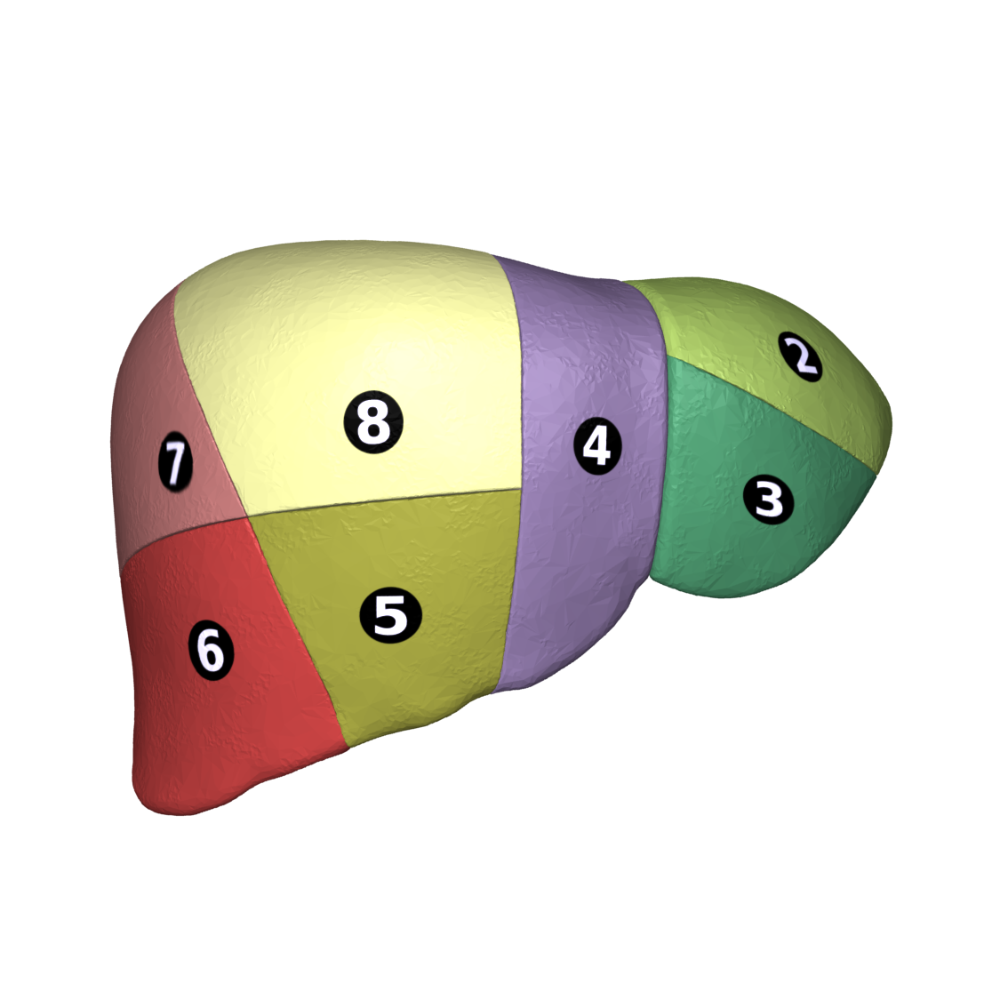
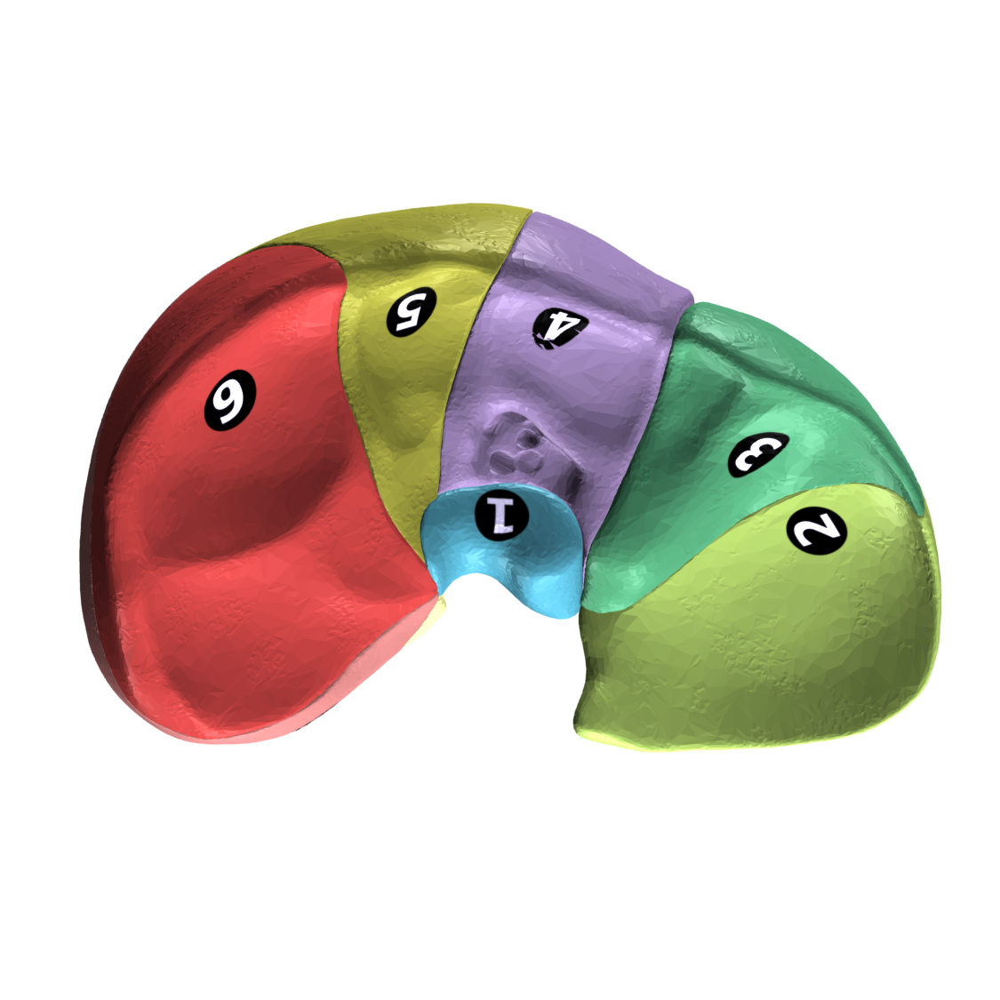

110 — Giải phẫu bụng cắt lớp: Couinaud, khoang sau phúc mạc & dịch MP-cổ trướng / Abdominal cross-sectional anatomy
Tags: pattern:binh-thuong vung:bung anatomy:bung
Mức chắc chắn (certainty): tổng hợp y văn (literature synthesis) — nhóm tự biên từ y văn mở, chưa gắn ca nguyên văn đơn lẻ.
1. Tổng quan — 8 phân thùy + 3 khoang + mốc Cantlie
- Phân thùy gan Couinaud (I–VIII): mặt phẳng ngang qua chạc ba tĩnh mạch cửa (portal bifurcation) chia tầng trên (VII, VIII, IVa, II) và tầng dưới (VI, V, IVb, III); 3 mặt phẳng dọc qua 3 tĩnh mạch gan (phải, giữa, trái).
- Mốc thực chiến: tĩnh mạch gan giữa (MHV) cùng mặt phẳng với giường túi mật + tĩnh mạch chủ dưới = đường Cantlie (chia gan phải và gan trái thật sự); dây chằng liềm tách phân thùy IV với II/III.
- 3 khoang sau phúc mạc: trước thận (anterior pararenal: tụy, tá tràng D2–D4, đại tràng lên/xuống) — quanh thận (perirenal: thận, thượng thận, giới hạn cân Gerota–Zuckerkandl) — sau thận (posterior pararenal: chỉ mỡ).

Phân thùy I–VIII. Nguồn: DBCLS/Anatomography, CC BY-SA 2.1 JP.2. Gamut vị trí tổn thương theo khoang
- Trong gan + phân thùy rõ: HCC/di căn/áp-xe — ghi phân thùy (quyết định mổ).
- Trước thận: viêm tụy (dịch quanh tụy), tá tràng (thủng D2), đại tràng (viêm túi thừa).
- Quanh thận: nang/u thận, thượng thận, máu sau phúc mạc (vỡ).
- Sau thận: chỉ mỡ — dày/mờ = lan từ khoang khác.
3. Bảng: dịch màng phổi vs cổ trướng (Cửa 4 bắt buộc)
| Tiêu chí | Dịch màng phổi (pleural effusion) | Cổ trướng (ascites) |
|---|---|---|
| Chân cơ hoành (crus) | Đẩy ra trước (displaced crus sign) | Áp cột sống |
| Vùng trần gan (bare area) | Len vào bare area | Không vào được |
| Mặt phân cách | Meniscus cong | Ôm gan/lách, rãnh Morrison |
| Chốt | Crus lệch + bare area = màng phổi | Quanh gan dưới hoành = cổ trướng |
4. Protocol CT bụng đa thì
- Động mạch muộn 35–40s (HCC, tuyến tụy 40–45s) — tĩnh mạch cửa 60–70s (nhu mô gan, thận 90–100s) — muộn 3–5p (washout, xơ) — thì gan-mật 20p (Primovist/Gadoxetate).
- Lát mỏng ≤ 1,5 mm + MPR coronal (đường mật, mạch mạc treo, ruột thừa).
5. Cạm bẫy
- Giả khí tự do Chilaiditi (đại tràng kẹt gan-hoành) — haustra + không Rigler, đừng mổ oan.
- Nhu mô gan nhiễm mỡ che tổn thương thì cửa — thêm MRI Primovist.
- Biến thể mạch tạng (gan phải từ SMA, trái từ vị trái) — đọc trước mổ/ghép.
6. Tự lượng giá — Blind Quiz
Ca 1 — Nhìn sơ đồ, kể tên 8 phân thùy + đường Cantlie.

Bấm để hiện đáp án
- I (đuôi) – II/III (trái ngoài) – IVa/IVb (trái trong) – V/VIII (phải trước) – VI/VII (phải sau); Cantlie = MHV + giường túi mật + TMC dưới.
Ca 2 — Dịch đáy ngực phải + crus lệch trước + vào bare area: màng phổi hay cổ trướng? (Bảng mục 3.)
Bấm để hiện đáp án
- Dịch màng phổi: displaced crus + bare area (+).
Bài liên quan chéo
- 100 – Tổng quan hệ Bụng
- 121 – LI-RADS & HCC (động học 4 thì)
- 040 – Tràn dịch màng phổi (meniscus/decubitus)
Không dùng để chẩn đoán độc lập khi chưa có người hướng dẫn.